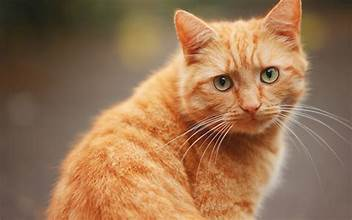

Breed diversity
For a very long time, people have loved cats because of their mystique and mystery. Every breed has unique characteristics to offer, ranging from the lively antics of the Siamese to the regal temperament of the Persian. There is a cat breed to fit every taste and way of life, whether you are drawn to the graceful long fur of a Maine Coon or the eye-catching beauty of a sleek Bengal. I'll delve into the vast diversity of breeds that exist today and examine the intriguing history of cat domestication, following their development from untamed hunters to cherished companions.
BREEDS
Some things to consider
My website is a great resource for anyone thinking about bringing a feline buddy into their home, not only cat enthusiasts. Although having a cat can be a fulfilling experience, it's crucial to be aware of the duties involved. When bringing a cat into your house, there are many things to think about, from giving it the right diet and grooming to making sure it receives routine medical treatment. We've included helpful resources, professional guidance, and useful hints throughout our sites to aid you along the way as a cat owner. Come on in, take a look around, and let's explore the amazing world of cats together!

CAT CARE